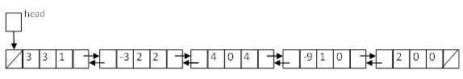

Objective
In this assignment, we will implement a simple calculator for polynomials in two variables using doubly linked lists.
Specifications
A polynomial in two variable, x and y, (i.e. bivariate polynomial) is defined as a finite sum of terms of the form axnym, where a is a real number and the exponents, n and m are whole numbers.
For each term, a is called the coefficient, n is called the exponent of x, m is the called the exponent of y. The degree of a term is the sum of the exponents of all the variables in that term, i.e. (n+m).
The polynomial in x and y can be expressed as follows:
where anm, an(m-1), a(n-1)m, ... , a11, a10, a01, a00 are integer coefficients, n≥0 and m≥0. The degree of a polynomial is the largest degree of any of its terms.
Here is an example:
3x2y2 + 5x2y + 2xy2 + 6x2 + 9xy +4y2 + 6x + y + 2.
In the above example, there are 9 terms. The degree of the polynomial is 4. The term 2xy2 has coefficient of 2 and a degree of 3; the term y has coefficient of 1 and a degree of 1.
The Order of Polynomial: A bivariate polynomial is usually sorted in the descending order of the degree of terms, and within a term, the variables are sorted in lexicographical order. For terms with the same degree, they are sorted in lexicographical order. For example, the following is a sorted bivariate polynomial:
x13y2 + 5x12 y3 + 3x11 y4 + 2x6 y9 + 5x5 y10 + x4 y11 + x6 + 7x5 y + 3x3 y3 - 3x3y - 3x2 y2 - xy3 + 4y4 + x - 9y + 2.
To add or subtract polynomials we combine like terms, i.e. terms having the same total degree. To multiply polynomials, we multiply each term in the first polynomial by each term in the second polynomial.
In this assignment, we will represent polynomials as doubly linked lists. The polynomials should have integer coeiffcients and non-negative integer exponents.
For example, a struct definition for a polynomial of degree n, n ≥ 0, in doubly linked list is shown as follows:
struct PolyNode
{
int coef; // the coefficient of a term in the polynomial
int exponx; // the exponent (degree) of variable x in the polynomial
int expony; // the exponent (degree) of variable y in the polynomial
PolyNode* prev; // the pointer to the prev term of the polynomial
PolyNode* next; // the pointer to the next term of the polynomial
};
A graphical representation of the node:
The graphical representation of the linked list for the polynomial, 3x3 y - 3x2 y2 + 4y4 - 9x + 2:
Tasks
Based on your definition, design and implement the following function prototypes so as to evaluate, add, subtract, and multiply polynomials.
- If polynomial a is empty, return true, else return false.
bool isEmpty(PolyPointer a); - Erase a polynomial and deallocate the nodes.
void erase(PolyPointer* a); - Print the polynomial a in decreasing order of exponent.
void printPoly(PolyNode* a); - Print the polynomial a in ascending order of exponent.
void printPolyReverse(PolyNode* a); - Sort the polynomial a in decreasing order of exponent and combine terms with same exponent of x and y. You are advised to use
Bubble Sort.
void sortPoly(PolyNode* a); - Evaluate a polynomial given a particular value of x and y.
long eval(PolyPointer a, int x, int y);For example, the value of the polynomial 9x6 + 2xy3 + x + 2 at x=3 and y=-2 is
9(3)6 + 2(3)(-2)3+ 3 + 2 = 6518 - Add two polynomials to create a third polynomial.
PolyPointer padd(PolyPointer a, PolyPointer b); - Subtract polynomial b from polynomial a to create a third polynomial.
PolyPointer psubtract(PolyPointer a, PolyPointer b); - Multiply two polynomials to create a third polynomial.
PolyPointer pmult(PolyPointer a, PolyPointer b);
Submission
The skeleton code is written using Visual Studio 2013. You can download it from here for free. Feel free to use your own computer/IDE to complete this assignment. However, be reminded that the skeleton code contains C++11 code, you may need to upgrate to newer versions of compiler to compile it.
You should only submit Polynomial.cpp. You may and should add your own helper functions in Polynomial.cpp to help you implement other functions. You may include additional libraries if you cannot compile the code in your own environment.
Due Date: 2015-10-11 23:59:00. You should submit your file to CASS system.
If you have any questions regarding this assignment, feel free to contact me via e-mail:lliaa@cse.ust.hk
You will receive 20% penalty if you are within 3 days late of the submission. No submission after 3 days is allowed. You are recommanded to start early. Usually it takes more than you expect to debug and test.
Sample Input / Output
============================================================================
COMP2012 (Fall 2015)
Assignment 1: a simple calculator for polynomials with two variables
Operations:
'q' for quit
'i' for entering two polynomials, a & b
'p' for printing the two polynomials in sorted order
'r' for printing the two polynomials in reverse order
'e' for evaluating the two polynomials at give values of x and y
'a' for adding the two polynomials (a+b)
's' for subtracting the polynomial b from the polynomial a (a-b)
'm' for multiplying the two polynomials (a*b)
============================================================================
>>> Menu: q:quit, i:input, p:print, r:reversely print, e:evaluate, a:add, s:subtract, m:multiply
>>> Command: i
Input the polynomials in sorted order ...
Input the first polynomial, a : xy+5-2x^6+7x^4y^2+5x^2-y^2
Input the second polynomial, b : y-5+x
>>> Menu: q:quit, i:input, p:print, r:reversely print, e:evaluate, a:add, s:subtract, m:multiply
>>> Command: p
Print the polynomials in sorted order ...
The first polynomial, a = -2x^6+7x^4y^2+5x^2+xy-y^2+5
The second polynomial, b = x+y-5
>>> Menu: q:quit, i:input, p:print, r:reversely print, e:evaluate, a:add, s:subtract, m:multiply
>>> Command: r
Print the polynomials in reverse order ...
The first polynomial, a = 5-y^2+xy+5x^2+7x^4y^2-2x^6
The first polynomial, b = -5+y+x
>>> Menu: q:quit, i:input, p:print, r:reversely print, e:evaluate, a:add, s:subtract, m:multiply
>>> Command: e
Evaluate the polynomials ...
Input the value for x: 1
Input the value for y: 2
a(1,2) = 34
b(1,2) = -2
>>> Menu: q:quit, i:input, p:print, r:reversely print, e:evaluate, a:add, s:subtract, m:multiply
>>> Command: a
a + b = -2x^6+7x^4y^2+5x^2+xy-y^2+x+y
>>> Menu: q:quit, i:input, p:print, r:reversely print, e:evaluate, a:add, s:subtract, m:multiply
>>> Command: s
a - b = -2x^6+7x^4y^2+5x^2+xy-y^2-x-y+10
>>> Menu: q:quit, i:input, p:print, r:reversely print, e:evaluate, a:add, s:subtract, m:multiply
>>> Command: m
a * b = -2x^7-2x^6y+7x^5y^2+7x^4y^3+10x^6-35x^4y^2+5x^3+6x^2y-y^3-25x^2-5xy+5y^2+5x+5y-25
>>> Menu: q:quit, i:input, p:print, r:reversely print, e:evaluate, a:add, s:subtract, m:multiply
>>> Command: q